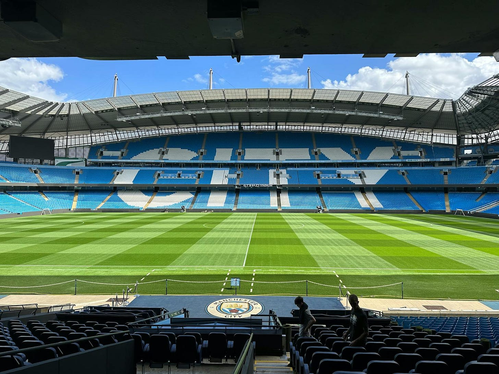
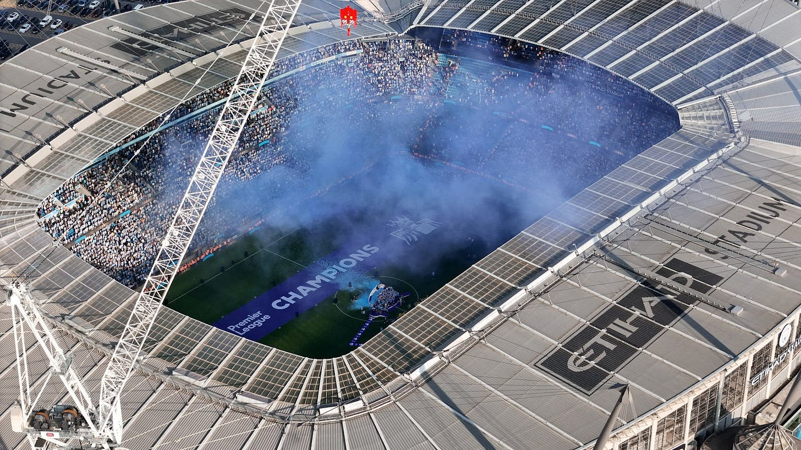
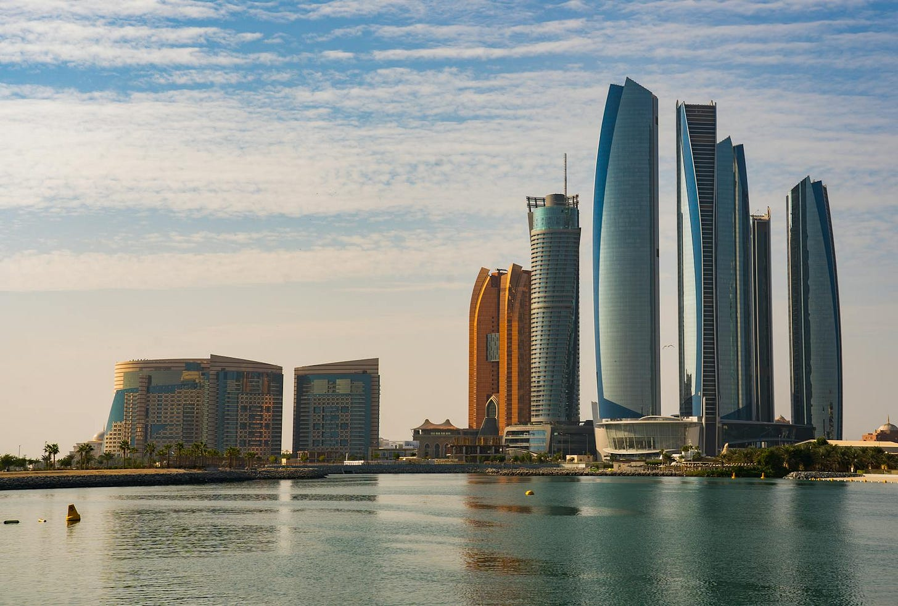
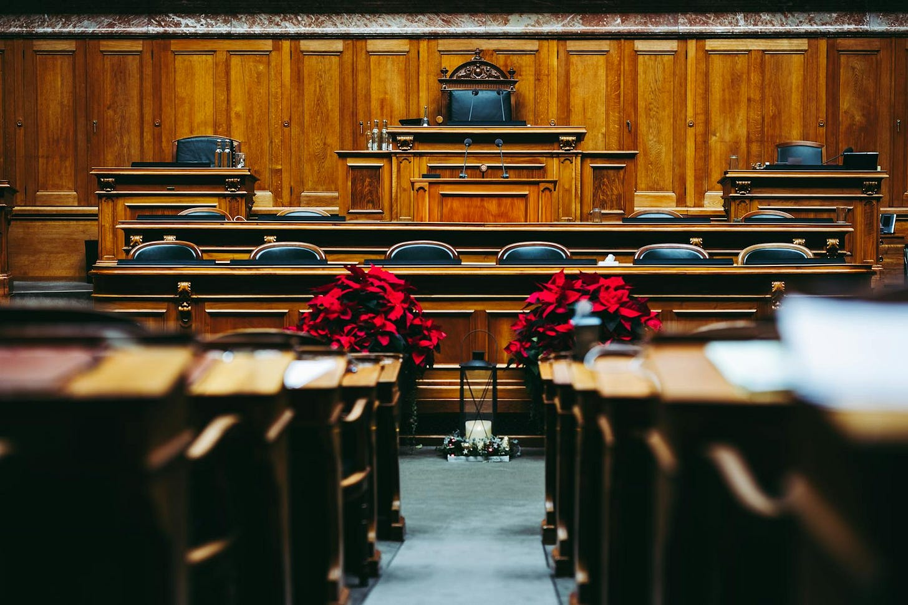

In September 2008, Sheikh Mansour bin Zayed Al Nahyan, member of the UAE ruling family, chairman of multiple sovereign wealth funds, established a private investment vehicle called Abu Dhabi United Group to purchase Manchester City for £210 million. At the time, City was a mid-tier English Premier League club, perpetually overshadowed by one of the biggest brands in world sport just across town: Manchester United and its 20 league titles. City had one from 1968.
Within four years of acquisition, City won the Premier League. Within a decade, it became a dynastic juggernaut under Pep Guardiola. Within fifteen years, ABUG expanded the investment into a sports conglomerate called City Football Group, spanning 13 clubs across five continents and systematizing football like no entity before it.
This is a two-fund story. Fund I transforms a single asset. Fund II builds a platform. Together, they represent the biggest cultural, financial, and geopolitical project in modern football -- one that has rewritten transfer strategy, brought venture economics to a sport that runs on patronage, and quietly redrawn the Middle East’s relationship with the West.
---
American sports franchises have compounded at 13% annually since 1961. The Ross-Arctos Sports Franchise Index tracks it precisely: 13.09% annualized return at 8.47% volatility, where the S&P 500 returned 10.54% at 18.82% volatility. American sports ownership has bond-like downside protection with equity-beating returns.
World football doesn’t work like this. It’s an open market where promotion and relegation mean a club’s revenue can triple (promotion to the Premier League) or collapse by 60% (drop to the Championship). There are no drafts, no salary caps, no structural protections. The elite few generate outlier returns. Everyone else operates on the edge of insolvency.
---
Fund I: Manchester City
Revenue has grown from £82 million pre-takeover to £715 million in 2023-24, an 8.7x increase in sixteen years. The club posted record profits, commercial revenue alone surging from £21 million to nearly £400 million. Eight Premier League titles since 2012 (including four consecutive), unprecedented in English football. A Champions League. A treble. The most dominant run in the history of the English game. Against the £210 million purchase price, the current valuation of roughly $5 billion looks like a 24x return.

But Sheikh Mansour wasn’t a passive investor.
Operating losses peaked at £197.5 million in 2010-11 and were the largest in English football history at the time. Over £1.3 billion in direct equity was injected in the first decade alone. Cumulative net transfer spending since the takeover exceeds €1.57 billion. Infrastructure investment -- the Etihad Campus training complex, the North Stand expansion, the Co-op Live Arena -- runs north of £700 million. Total capital deployed into the Manchester City project is somewhere between £2.5 and £3 billion. Against a current equity value of roughly $5 billion, that’s a 1.5-2x return over seventeen years. An index fund would have returned 4-5x.
But calling this an unsuccessful investment would be lazy.
In 2008, Premier League clubs traded at roughly 1.5-2x annual revenue. Today, top clubs trade at 5-7x. Multiple expansion alone would have tripled any 2008 investment. And Manchester City didn’t ride the wave. It created it. Revenue grew 8.7x since the takeover -- against a Premier League average of roughly 3.2x. Arsenal grew 2.5x. Liverpool, which won a Champions League and mounted sustained title challenges under Klopp, grew 3.8x. Manchester City more than doubled the growth rate of its closest peer.
The comps make the return clearer. FSG bought Liverpool for £300 million in 2010 , and now values it at $5.4 billion. That’s a 14x return, roughly 19% annualized, on a club that required modest capital injection and smart management. The Glazers bought Manchester United for £790 million in 2005 via leveraged buyout, loaded the club with debt, extracted over $573 million in dividends, and still sit on an asset worth $6 billion.
Mansour’s 1.5-2x on total capital deployed is the worst headline return of the group. But the asset he built is the most operationally dominant. City trades at roughly 5.9x revenue -- above the European average of 4.9x, below United’s 7.3x. Either way, the 1.5-2x number understates the return because it ignores the strategic value of the asset.
---
Fund II: City Football Group
In 2013, ABUG established City Football Group and began acquiring clubs across the world: New York City FC, Melbourne City, Yokohama F. Marinos, Montevideo City Torque, Girona, Mumbai City, Lommel SK, Troyes, Palermo, Bahia. Thirteen clubs across five continents, selected not at random but by city -- each one a high-growth market with monetization potential and an underserved football audience.
CFG’s total revenue hit £933 million in 2023-24, but 77% of that is still Manchester City. CFG posted a group net loss of £91.9 million that year, ballooning to £291.1 million in 2024-25, and cumulative losses across the group run approximately £1.8 billion.
On a pure P&L basis, Fund II is burning cash. But this is where venture math comes in.
Girona. Acquired for approximately €7 million for a 44% stake in 2017. A small Spanish club with modest ambitions. In 2024, Girona qualified for the Champions League after beating Barcelona 4-2. The club’s value has appreciated to somewhere between €200 and €400 million. That’s a 30-60x return on a single asset inside the portfolio.
NYCFC. Launched with a $100 million MLS expansion fee in 2013. Current valuation: $1.12 billion. An 11x appreciation, with a new £780 million stadium under construction in Queens.
Silver Lake’s $500 million investment in 2019 valued CFG at $4.8 billion -- a record for a sports group. Silver Lake has since increased its stake to 18%, buying additional shares from the previous investors.
Most of the satellite clubs are modest. Some will fail. But the outliers -- Girona, NYCFC, potentially Bahia and Palermo -- justify the portfolio the way a breakout Series A justifies the losses on the other nine. This is venture math applied to football. And ABUG invented the asset class.
Multi-club ownership existed before CFG. Red Bull built a brand, but ABUG built a system. There are now 125 multi-club ownership groups controlling 380 clubs worldwide. Nearly 42% of clubs in Europe’s top five leagues are part of MCO structures. CFG created the template.
---
Was the purchase of Manchester City and expansion of City Football Group an elaborate marketing stunt to increase the value of the UAE?
Almost certainly.
In 2008, the UAE’s GDP was $254 billion. It was an oil state with a nascent tourism sector and limited Western cultural presence. Today, the UAE’s GDP exceeds $537 billion. FDI inflows have surged to $45.6 billion annually, ranking it 10th globally and first regionally. Dubai welcomes nearly 19 million international visitors a year. The country has transformed from a regional petro-economy into a global hub for capital, talent, and culture.
Manchester City didn’t cause all of that. But it was the beachhead, an extraordinarily visible entry point for inserting the Middle East into the Western cultural consciousness. Every Premier League broadcast into 900 million homes carries Abu Dhabi’s name. Every Etihad sponsorship, every matchday in Manchester, every social media post to 180 million followers -- it was a sustained, decade-long exercise in cultural integration at a scale that no ad campaign could replicate.

Many dismiss this as sportswashing. That’s not wrong, but it hides the complexity. Sportswashing implies a one-directional transaction: buy a club, launder a reputation, move on. What ABUG did was more structural. They didn’t just buy visibility. They bought a seat at the table of Western cultural production and then they built the table bigger. The Etihad sponsorship deal, originally worth £400 million, is reportedly being renewed at close to £1 billion. Abu Dhabi isn’t renting Manchester City’s audience. It’s compounding inside it.
The question isn’t whether this is sportswashing. It’s whether sportswashing, done at sufficient scale and duration, becomes something else entirely -- economic integration that outlasts the moral critique.
Many highlight the UAE’s offenses: restrictions on press, migrant worker exploitation, criminalization of dissent.
And yet the market won. The Premier League took the money. The fans filled the stadium. Silver Lake wrote a $500 million check. Revolut and BYD signed sponsorship deals during an active investigation. The Middle East is booming.
The harder argument is the one that makes people uncomfortable.
Moral legitimacy follows economic power. It doesn’t precede it. Singapore built one of the most admired economies in the world under conditions the West would call authoritarian. England industrialized through empire, and world sport is largely shaped by colonial infrastructure. The United States’ moral authority was not a precondition for its economic rise, but a consequence of it.
ABUG is not the first controversial owner of a football club. Chelsea was built by Roman Abramovich, an oligarch whose wealth came from rigged post-Soviet privatization. FIFA’s own leadership was prosecuted under US racketeering laws. Match-fixing has collapsed entire football leagues across Southeast Asia, enabled by betting partnerships that the Premier League itself welcomed.
Football has never been clean. The outrage tells you something about which sins the market tolerates and which it doesn’t.
Was the moral outrage directed at Manchester City commensurate with moral anger elsewhere? And how did it interact with race, religion, and scale?
---
And yet the investment might still fall to zero.
Manchester City faces 115 formally announced charges from the Premier League. The allegations: false accounting, inflated sponsorship revenue funded by the ownership group, undisclosed payments, and systematic failure to cooperate with investigators. The charges span nine seasons, from 2009 to 2018.

If true, the financial story told in this essay unravels. The revenue growth that made Manchester City look like a self-sustaining commercial juggernaut may have been artificially subsidized by owner funding. The operating losses may have been larger than reported. The total capital deployed may have been higher. And the current valuation built on the assumption of a clean, profitable, growing asset would need to be fundamentally restated.
A ten-week hearing concluded in December 2024. As of March 2026, no verdict has been delivered. Fourteen months of silence. Potential sanctions range from fines to a 40-60 point deduction to expulsion from the league.
Then the counterargument. Not a defense, but an observation.
Silver Lake invested after the allegations became public and has since increased its stake. Sponsors have arrived. Revenue hit records throughout the proceedings. Either the capital allocators in the room are wrong, or they’ve seen something the public hasn’t.
The ambiguity is the point. The verdict could strip titles, crater valuations, and rewrite this entire narrative. Or it could validate what the market already believes -- that the asset is real, the growth is structural, and the charges are the cost of having disrupted a cartel.
We don’t know yet.
---
The most ambitious fund deployment of the last two decades might be a sovereign wealth vehicle that bought a football club, lost money for a decade, built a global platform, weathered 130 charges, and accidentally invented an asset class, while also redrawing the geopolitical map of who gets to own Western culture.